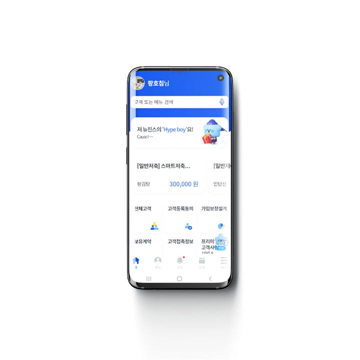
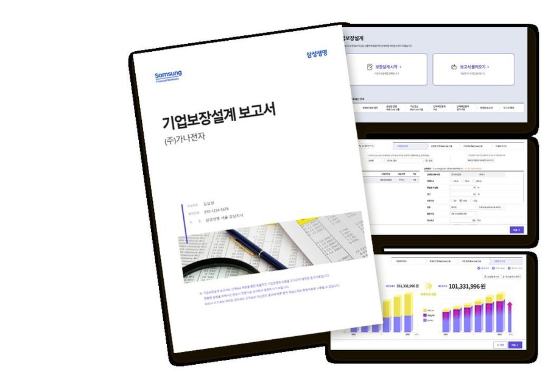
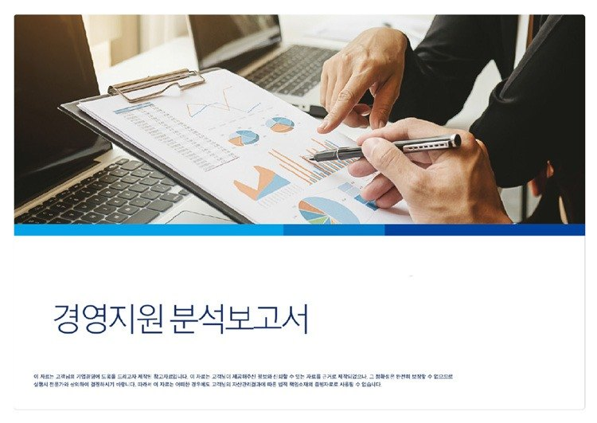
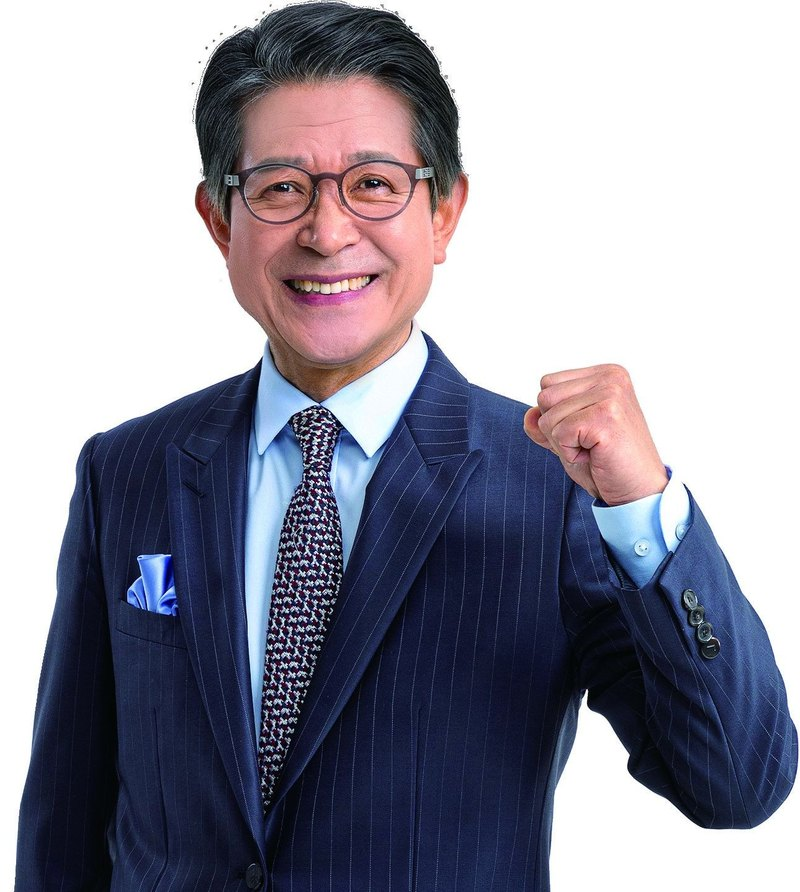
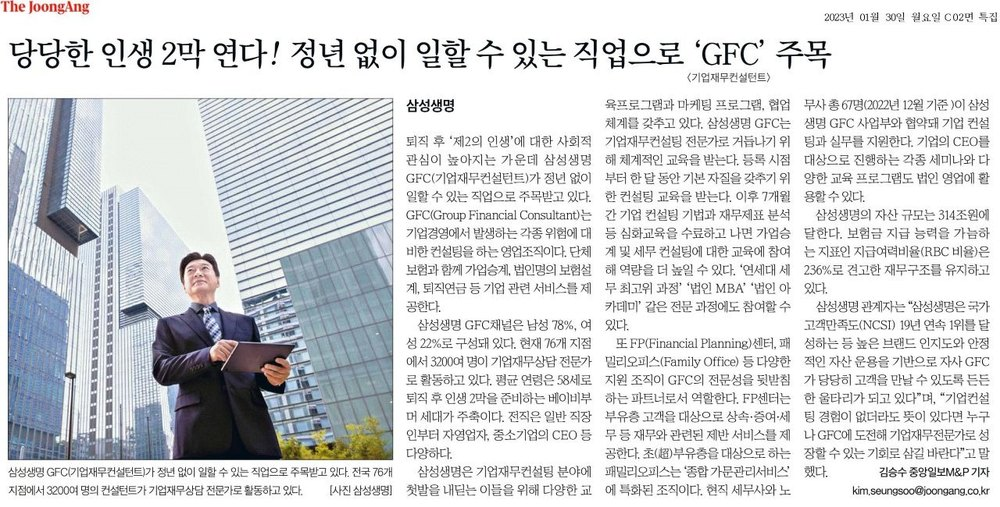

350.7조
총 자산 규모
2025년 연간 실적발표자료
당신의 경쟁력을 높여주는 이름, 삼성생명입니다. 총 자산 350.7조·NCSI 22년 연속 1위의 위상과 체계적인 양성 시스템 위에서 법인·기업의 재무와 보장을 책임지는 기업재무컨설턴트(GFC)로 제2의 인생을 시작하세요.
압도적 재무 건전성과 22년 연속 고객만족도 1위의 브랜드 파워, 그리고 의지와 노력에 비례해 상한선 없이 보상받는 GFC 소득체계를 확인하세요.
전체 GFC 평균 508만 원 · 1년 이상 활동 GFC 평균 716만 원 · 상위 30% 1,565만 원
* 출처: 삼성생명 GFC사업부 ('25년 월평균, '26년 2월 근무 GFC 대상 / 활동: 월평균 과세표준 100만 원 이상)
* 전체 GFC 상위 30% 월평균 과세표준 1,097만 원 ('25년 평균 기준) · 개인 활동 성과에 따라 상이
등록지원 80만 원(0차월) · 정착수수료 150만~230만 원(1~11차월) · 교육이수 축하금 30만~70만 원(12차월) + 성과보너스
환산 30만 원 유지 시 월평균 282만 원(1차년 257만 / 2차년 304만) · 환산 50만 원 시 월평균 482만 원(1차년 403만 / 2차년 550만)
대학생 자녀 학자금(연 140만 원), FC몰 포인트, 설·추석 명절 선물, 경조비·상조물품, 장기활동 축하금(10~40년차 20~200만 원)

스마트폰·태블릿 상관없이 고객·보유계약 조회부터 보장 설계·청약까지 「사랑 ON」에서 한 번에 처리합니다.

AI 기업 검색(CRETOP/KISLINE)으로 활동처를 발굴하고, CEO·경영진 대상 맞춤형 기업보장설계 보고서를 기본 지원합니다.

급여·퇴직금·가업승계·배당 분석보고서를 제공하며, 우수 GFC(CSA)는 전문인력(CTA)의 법인 방문약속(TA Call)을 우선 지원받습니다.
보유기업 39,510개(퇴직연금 제외·'26.1월), GFC 인당 7.8개 기업을 관리하는 전문 법인 네트워크입니다.
고용노동부 통계 기준 업계 1위 퇴직연금 운용 경쟁력으로 기업 DB·DC·IRP 컨설팅 신뢰도를 높입니다.
기업운영·승계 아카데미, 중소기업 특화 세미나, VIP 골프 마케팅, CEO 부부 문화 세미나를 지원합니다.
Pro GFC(Club→명인→프레스티지→명예임원·MDRT) 또는 관리자(CM·CA→지점장→지역단장)의 두 가지 비전을 선택합니다.
국내 5인 이상 기업 81.9만 개·5인 미만 554.4만 개·퇴직연금 432조 규모의 블루오션 기업보험 시장을 개척하는 삼성생명 GFC의 핵심 영역과 교육과정을 소개합니다.
기업경영 상 발생하는 각종 위험에 대비한 Risk Financing Consulting 전담조직
경력·전공 무관, 위촉 후에는 정년 없이 성장하는 두 가지 성공 트랙
0차월 2주 전일 입문 과정부터 13차월 연수소 심화, 최상위 EXPERT 과정까지 전혀 경력이 없는 분도 전문가로 성장할 수 있도록 지원합니다.
0차월 2주 전일 + 1차월 온라인 및 연수소(1박 2일) 과정. 판매자격 취득, 단체영업 프로세스 이해 및 「사랑 ON」 시스템을 체득합니다.
지역단 2일 집합 + 5차월 연수소(1박 2일). AI 시장발굴·니즈환기, 기업보장분석 및 주력상품 맞춤 제안 역량을 완성합니다.
지역단 1일 집합 + 9차월 연수소(1박 2일). 법인 퇴직금 플랜, 정관 정비, 배당 컨설팅 등 본격적인 기업재무 솔루션을 학습합니다.
법인전환·법인절세전략·가업승계 마스터 후 법인 프론티어(재무제표·M&A·가지급금) 및 삼일세무최고위 과정으로 확장합니다.
은행 지점장·IT 직군·육군대령·25세 최연소 입사자까지 — 언론과 현장이 주목하는 삼성생명 GFC 공식 수상자들의 실제 성과입니다.


1999년 5월 위촉 이후 상품에 맞는 시장 발굴과 트렌드에 맞춘 영업방법을 제시해 왔습니다. 협회회원 대상 세미나 마케팅과 문화활동·ROTC 네트워크 연계를 통해 연도상 17회 수상의 커리어를 이어가고 있습니다.
육군대령 전역과 국방대학교 교수 경력을 뒤로하고 2011년 7월 GFC에 도전했습니다. 지인 소개와 제조업 개척영업을 꾸준히 실천하며 연도상 5회를 수상했고, 정년 없는 제2의 인생을 활기차게 펼치고 있습니다.
1993년 3월 25세 최연소로 사회생활을 GFC로 시작했습니다. 고졸로 인맥은 적었지만 체계적인 컨설팅영업으로 시장을 개척해 연도상 30회 연속 수상 및 23~25년 삼성생명 최고영예 플래티넘을 수상했습니다.
은행 IT직군에서 2001년 4월 GFC로 전환했습니다. 영업 비전공자였지만 삼성생명의 지원 시스템과 시장 개척을 통해 고객을 발굴하고 조직과 함께 성장하며 연도상 18회 수상의 안정적인 커리어를 구축했습니다.
GFC 직무 내용, 2026년 신인 수수료 지원체계, GTC 교육 커리큘럼을 현장에서 직접 확인해 보세요. 사전예약제로 운영되며 중식이 무료 제공됩니다.
평균 1분이면 신청이 완료되며, 남산법인지점 김지훈 팀장이 영업일 기준 1일 이내 좌석 확정 연락을 드립니다.
GFC 지원 자격 및 잡설명회 참여에 대해 가장 많이 묻는 6가지 질문을 최신 공식 기준으로 정리했습니다.
삼성생명 남산법인지점 / 담당: 김지훈 팀장 (010-4558-1663)
성함, 생년월일(주민번호 앞 6자리), 휴대전화번호, 희망 참석 일정
삼성생명 남산법인지점 GFC 위촉 가능 연령 확인, 채용 상담 안내 및 진행, 잡설명회 참가 안내·좌석 배정 및 사전예약 확정 연락
잡설명회 종료 및 상담 완료 후 최대 6개월 경과 또는 동의 철회 요청 시 즉시 파기 (단, 관계 법령에 따라 보존이 필요한 경우 해당 기간 보관)
귀하는 본 개인정보 수집·이용 동의를 거부하실 수 있으며, 동의를 거부하실 경우 잡설명회 사전예약 및 채용 상담 서비스 제공이 제한됩니다.
남산법인지점 김지훈 팀장이 영업일 기준 1일 이내에 남겨주신 번호로 좌석 확정 안내 연락을 드리겠습니다.